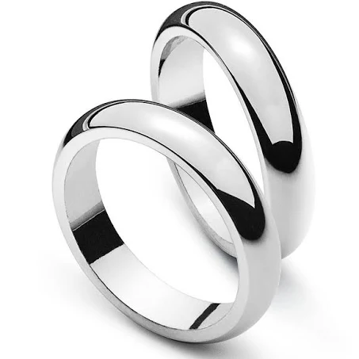

Notre journée de mariage approche à grands pas, et voici ce que vous devez savoir :
Au sein de cette journée qui marque notre union, seuls ceux qui ont eu vent de l'évènement via nos faire-part auront l'heureuse opportunité d'assister à ce moment spécial. À 10h30, nos regards se croiseront avec eux à l'état civil de Martigny, un lieu empreint de solennité et de promesses. Là, au milieu des témoins choisis avec soin et de nos proches les plus intimes, nous échangerons nos vœux, gravant nos promesses d'amour.
Pour les autres, nous vous offrons deux options, chacune avec sa touche de charme.
1. Comme nous sortirons à 11h00 de l'état civil de Martigny, nous vous invitons à nous accueillir avec des bulles pour célébrer ce moment magique. Après quelque photos, nous prendrons la route jusqu'à "La Pisse Vache". À son parking, nous vous attendrons pour former un cortège jusqu'à Vérolliez. Telle une mélodie cacofonique, nos voitures suivront la route vers St-Maurice.
La seconde option est de nous rejoindre dès 12h00 à Vérolliez pour l'apéritif. Vous pourrez ainsi vous joindre à nous pour partager des moments conviviaux.
Peu importe le choix que vous ferez, votre présence ajoutera une nuance spéciale à notre journée. Nous sommes impatients de créer des souvenirs mémorables en votre compagnie.